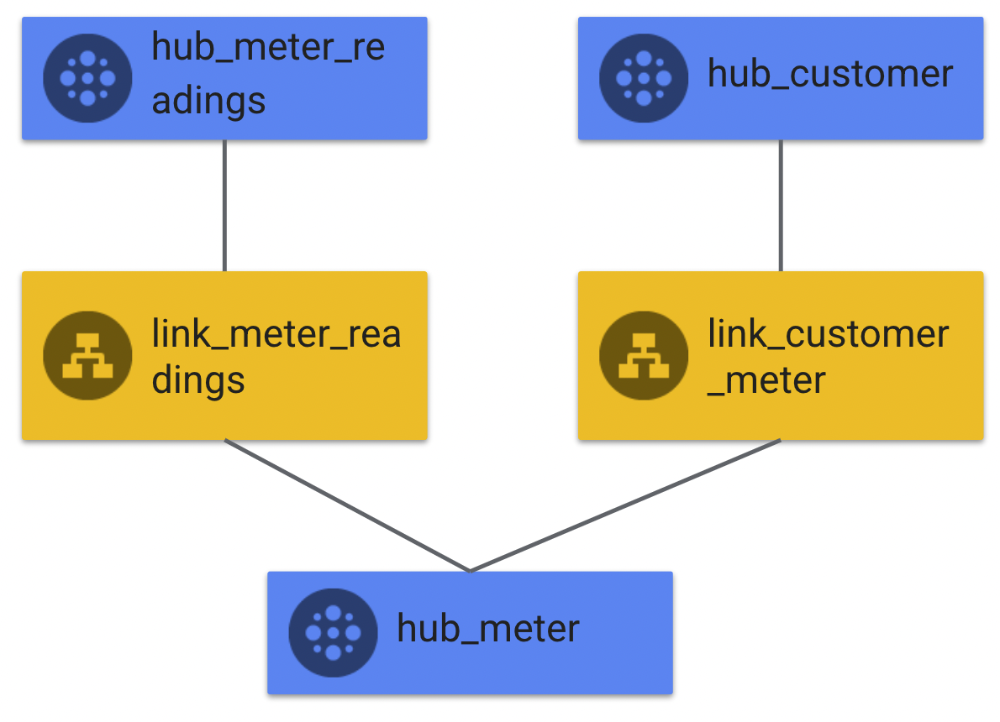

1. Introduction
What you'll build
In this codelab, you're going to:
- Learn the basics of BigQuery
- Learn how to create datasets, tables, load data in various ways (via load, via SQL)
- Learn the basics of a data vault and implement your own model
- Learn how to build reports
Introduction to Qwiklabs
Qwiklabs is an environment where you can easily learn GCP without registering, giving credit cards details and doing any setup. Just register and enjoy.
Obtaining token
The only thing that you need is an access token that will allow you to open a lab.
Lab selection
1. Go to https://www.cloudskillsboost.google/ and create an account if you don't have one already.
To create an account, click "Join" at the top right. The process includes clicking a confirmation link sent via email, so you will need access to the email account you use to join.
2. Go to the Google labs catalog, https://www.cloudskillsboost.google/catalog
3. Select the lab.
4. Click "Start lab"
5. You will be prompted to enter a token in the four boxes - you will enter your token number over the 1234 prompt - once you do so, your lab will begin!
Next steps
Open this link, register/sign in qwiklabs, use token/credit to open the lab. The 90 min counter will start to decrease on the website. Please track the time on this codelab (top right corner).
2. Basic data processing in BigQuery
Run the lab.
Run quickly through the lab but please don't exit the lab.
Strongly Recommended: Use a notepad on side, copy paste shell commands, learn and use Cloud Shell to run commands on GCP
Using Cloud Shell
3. Drawing first raw entities
Business problem definition
As an energy company we would like to store, analyze and provide insights on data from meters.
There are many use cases in our mind:
- Billing our customers
- Creating a Customer 360 view for marketing
- Being helpful to the customer and providing them insights
- Anomaly detection for erroneous or fraudulent meters
Today we will focus on the first use case only - providing information about readings on meters. If you have time, you will also be able to add some customer context.
Meter and Reading models
In the first task you will use pen and paper.
Here are raw exports:
meter_readings_export:

Meter_load:
.png)
Customer_export:
.png)
Customer_meter_export:
.png)
Some things to investigate:
- What are the business keys for meter, meter reading and customer?
- What are technical fields that are important for auditing (source, date)?
- What are the attributes that are important for the use case?
- What additional fields you could add to make this model more performant (hint: hashes, don't worry about ssl certificate)
Task:
- Draw a relationship schema between hubs.
- List fields in one or two of the entities (hub, sat, link between hub and sat)
4. Drawing first raw entities - results
Relationships
You should come up with something similar to this:

Why?
- We have 3 entities: meter, reading and customer.
- We have 2 direct relations: the customer owns a meter and the meter has multiple readings.
Example HUBs
.png)
Example SATs:
.png)
Example LINKs:
Links are a bit more complex to understand so here you can see in detail how some of the fields are created.
.png)
5. Architecture
It's time to draw our first GCP architecture. You can use again, pen and paper and focus on drawing following components or visualize it in mind:
- Source (system/disk/gcs)
- BigQuery datasets:
- Staging dataset
- Raw vault dataset
- Information mart dataset
- Business vault dataset
- BI tools (BQ UI)
Draw GCP architecture which shows the following business components (and their technical implementation) and how the data flows between them. For the sake of completeness, add source systems.
6. Architecture
Outcome
.png)
7. Setting up staging datasets
For this workshop we will focus on 2 entities - meter and reading. If you have time, you will be able to add customer entities as well.
Create a BigQuery dataset "staging", located in a US multi region dataset.
Console
- Press 3 dots next to project:
.png)
- Type name and set location
.png)
Within BigQuery UI, compose a new query.
Meter Staging table
CREATE OR REPLACE TABLE staging.meter_load
(
meter_id INTEGER,
tariff STRING,
location STRING,
source STRING,
load_date DATE
);Meter Readings Staging table
CREATE OR REPLACE TABLE staging.meter_readings_load
(
readings_id INTEGER,
meter_id INTEGER,
readings FLOAT64,
readings_time TIMESTAMP,
source STRING,
load_date DATE
);File loading
Download first files (via cloud shell):
curl -O https://raw.githubusercontent.com/stankiewicz/dv-lab/main/cust_meter.csv
curl -O https://raw.githubusercontent.com/stankiewicz/dv-lab/main/readings.csv
curl -O https://raw.githubusercontent.com/stankiewicz/dv-lab/main/meters.csv
curl -O https://raw.githubusercontent.com/stankiewicz/dv-lab/main/customers.csvLoad files (via cloud shell)
Example command
bq load \ --autodetect \ --source_format=FORMAT \ PROJECT_ID:DATASET.TABLE \ PATH_TO_SOURCE
bq load --autodetect --source_format=CSV staging.meter_load meters.csv bq load --autodetect --source_format=CSV staging.meter_readings_load readings.csv
Run select on staging.meter_load and staging .meter_readings_load table to verify that that data is there.
8. Creating Meter HUB
Create a BigQuery dataset "raw", located in the US. You can try bq cli (cloud shell):
bq --location=us mk raw
Create hash helper UDF (BigQuery UI)
CREATE OR REPLACE FUNCTION raw.ConvertHash(x ANY TYPE)
RETURNS STRING
AS (TO_BASE64(MD5(IFNULL(NULLIF(UPPER(TRIM(CAST(x AS STRING))), ''), '^^'))));Create a BigQuery table "hub_meter"
CREATE OR REPLACE TABLE raw.hub_meter ( meter_hash_id STRING, meter_id INT, source STRING, load_date DATE ) PARTITION BY load_date CLUSTER BY meter_hash_id, load_date;
Now load it.
INSERT INTO raw.hub_meter SELECT DISTINCT raw.ConvertHash(s.meter_id) AS meter_hash_id --creating Meter hashID on business keys ,s.meter_id ,s.source ,s.load_date FROM staging.meter_load AS s LEFT JOIN raw.hub_meter AS r ON r.meter_id = s.meter_id WHERE r.meter_hash_id IS NULL
-- and s.load_date= ;
Run select on raw.hub_meter table to verify that that data is there.
9. Creating Reading HUB
Create a BigQuery table "hub_readings"
CREATE OR REPLACE TABLE raw.hub_readings ( readings_hash_id STRING, readings_id INTEGER, source STRING, load_date DATE ) PARTITION BY load_date --Partitioning table based on loaddate of day CLUSTER BY readings_hash_id; --Clustering based on Readings_HashID which will be used further for querying data
Now load it.
INSERT INTO raw.hub_readings
SELECT DISTINCT
raw.ConvertHash(s.readings_id) AS readings_hash_id,
s.readings_id,
s.source,
s.load_date
FROM
staging.meter_readings_load AS s LEFT JOIN raw.hub_readings AS r
ON r.readings_id = s.readings_id
WHERE
r.readings_hash_id IS NULL
-- and s.load_date='YYYY-MM-DD'
;Run select on raw.hub_readings table to verify that that data is there.
10. Creating Meter Satellite
The Meter satellite table is clustered based on the source and the effective_from columns. With these clustering options, we are able to filter meters by source and their installation date really fast.
CREATE OR REPLACE TABLE raw.sat_meter
(
meter_hash_id STRING,
sat_meter_hashdiff STRING,
tariff STRING,
location STRING,
effective_from DATE,
source STRING,
load_date DATE
)
CLUSTER BY source, effective_from;In the above query, we don't have partitioning for the load_date. This is totally specific for our use case. We don't expect the user to run meter joins based on a particular time period.
INSERT INTO raw.sat_meter
WITH
newmeter AS (
SELECT
tariff,
location,
load_date AS effective_from,
source,
load_date,
raw.ConvertHash(meter_id) AS meter_hash_id,
raw.ConvertHash(CONCAT(location,'|', tariff)) AS sat_meter_hashdiff
FROM staging.meter_load),
currmeter AS (SELECT meter_hash_id, sat_meter_hashdiff FROM raw.sat_meter)
SELECT DISTINCT
newmeter.meter_hash_id,
newmeter.sat_meter_hashdiff,
newmeter.tariff,
newmeter.location,
newmeter.effective_from,
newmeter.source,
newmeter.load_date
FROM newmeter
LEFT JOIN currmeter
USING(meter_hash_id, sat_meter_hashdiff)
WHERE
currmeter.sat_meter_hashdiff is NULL
-- and newmeter.load_date='YYYY-MM-DD
;11. Creating Reader Satellite
In this satellite table, we don't use the usual load_date as the partitioning column since fundamentally we are more interested in the readings_time. The readings_time is the column that end users will query these tables. We also provide clustering based on source and readings_time since we consider that these are the most used columns in filtering.
CREATE OR REPLACE TABLE raw.sat_readings
(
readings_hash_id STRING,
sat_readings_hashdiff STRING,
readings_time TIMESTAMP,
readings FLOAT64,
effective_from DATE,
source STRING,
load_date DATE
)
PARTITION BY DATE(readings_time)
CLUSTER BY source, readings_time;Now we load it:
INSERT INTO raw.sat_readings
WITH
newmeter AS (
SELECT DISTINCT
raw.ConvertHash(readings_id) AS readings_hash_id
,raw.ConvertHash(CONCAT(readings,'|', readings_time)) AS sat_readings_hashdiff
,readings_time
,readings
,CAST(meter_readings.load_date AS DATE) AS effective_from
,meter_readings.source
,CAST(meter_readings.load_date AS DATE) AS LOAD_DATE
FROM
staging.meter_readings_load AS meter_readings
),
currmeter AS (
SELECT readings_hash_id, sat_readings_hashdiff FROM raw.sat_readings
)
SELECT
newmeter.readings_hash_id,
newmeter.sat_readings_hashdiff,
newmeter.readings_time,
newmeter.readings,
newmeter.effective_from,
newmeter.source,
newmeter.load_date
FROM newmeter
LEFT JOIN currmeter
USING(readings_hash_id, sat_readings_hashdiff)
WHERE
currmeter.sat_readings_hashdiff is NULL12. Creating Link
Links are created based on exports that document relations between hubs, in this case it is a meter_reading file.
CREATE OR REPLACE TABLE raw.link_meter_readings
(
link_hash_id STRING,
meter_hash_id STRING,
readings_hash_id STRING,
source STRING,
load_date DATE
)
PARTITION BY load_date
CLUSTER BY source;Now we load it:
INSERT INTO raw.link_meter_readings
SELECT DISTINCT
raw.ConvertHash(CONCAT(meter_id, '|', readings_id)) AS link_hash_id,
raw.ConvertHash(meter_id) AS meter_hash_id,
raw.ConvertHash(readings_id) AS readings_hash_id,
r.source,
r.load_date
FROM
staging.meter_readings_load r
WHERE raw.ConvertHash(CONCAT(meter_id, '|', readings_id)) NOT IN (SELECT link_hash_id FROM raw.link_meter_readings);13. Customer - Hub, Sat, Link
If you have less than 30 minutes left, skip this step.
If you have more (30-45 minutes), then give it a try and model customer entities.
Staging DDL
Customer Staging table
CREATE OR REPLACE TABLE staging.customer_load
(
c_customer_id STRING,
type STRING,
c_customer_name STRING,
source STRING,
load_date DATE
);Customer meter Staging table
CREATE OR REPLACE TABLE staging.customer_meter_load
(
c_customer_id STRING,
meter_id INTEGER,
source STRING,
load_date DATE
);Loading data
bq load --autodetect --source_format=CSV staging.customer_load customers.csv bq load --autodetect --source_format=CSV staging.customer_meter_load cust_meter.csv
Raw Vault DDL
CREATE OR REPLACE TABLE raw.hub_customer
(
customer_hash_id STRING,
customer_id STRING,
source STRING,
load_date DATE
)
PARTITION BY load_date --Partitioning table based on loaddate of day
CLUSTER BY customer_hash_id; --Clustering based on HashID which will be used further for querying data
CREATE OR REPLACE TABLE raw.sat_customer
(
customer_hash_id STRING,
sat_customer_hashdiff STRING,
email STRING,
type STRING,
name STRING,
effective_from DATE,
source STRING,
load_date DATE
)
PARTITION BY load_date;
CREATE OR REPLACE TABLE raw.link_meter_customer
(
link_hash_id STRING,
meter_hash_id STRING,
customer_hash_id STRING,
source STRING,
load_date DATE
)
PARTITION BY load_date
CLUSTER BY source;DML
INSERT INTO raw.hub_customer
SELECT DISTINCT
raw.ConvertHash(s.c_customer_id) AS customer_hash_id,
s.c_customer_id,
s.source,
s.load_date
FROM
staging.customer_load AS s LEFT JOIN raw.hub_customer AS r
ON r.customer_id = s.c_customer_id
WHERE
r.customer_hash_id IS NULL;
INSERT INTO raw.sat_customer
WITH
newmeter AS (
SELECT DISTINCT
raw.ConvertHash(c_customer_id) AS customer_hash_id
,raw.ConvertHash(CONCAT(c_email_address,'|', c_customer_name'|', type)) AS sat_customer_hashdiff
,c_email_address
,type
,c_customer_name
,CAST(customer_load.load_date AS DATE) AS effective_from
,customer_load.source
,CAST(customer_load.load_date AS DATE) AS LOAD_DATE
FROM
staging.customer_load AS customer_load
),
currmeter AS (
SELECT customer_hash_id, sat_customer_hashdiff FROM raw.sat_customer
)
SELECT
newmeter.customer_hash_id,
newmeter.sat_customer_hashdiff,
newmeter.c_email_address,
newmeter.type,
newmeter.c_customer_name,
newmeter.effective_from,
newmeter.source,
newmeter.load_date
FROM newmeter
LEFT JOIN currmeter
USING(customer_hash_id, sat_customer_hashdiff)
WHERE
currmeter.sat_customer_hashdiff is NULL
;
INSERT INTO raw.link_meter_customer
SELECT DISTINCT
raw.ConvertHash(CONCAT(meter_id, '|', c_customer_id)) AS link_hash_id,
raw.ConvertHash(meter_id) AS meter_hash_id,
raw.ConvertHash(c_customer_id) AS customer_hash_id,
r.source,
r.load_date
FROM
staging.customer_meter_load r
WHERE raw.ConvertHash(CONCAT(meter_id, '|', c_customer_id)) NOT IN (SELECT link_hash_id FROM raw.link_meter_customer);14. Information mart
Congratulations, you have finished creating a raw data vault model! Now it is time to make use of it to meet your business needs.
Business problem
As a billing analyst I would like to know end of the month readings for all meters and be able to split/filter/aggregate it by:
- Operational aspects (meter dimensions like tariffs, locations)
- Customer aspects (customer dimensions like type of customer)
Sample reports:
- Top locations by usage this month
- Top N customers by Usage this year
- Top N Customers with Usage change last month
- Monthly Total Usage
Star Schema design
This is the design of star schema that we will create now:
.png)
Infomart
Create a dataset for storing information mart called infomart.
Meter Dimension - Type 1
The simplest dimension is just joining the Hub and the Satellite but first we need to decide if we need Type 1 or Type 2 dimension. Type 1 is the dimension that shows most current values for all the attributes.
For Type 1 we can use the Hub key as the primary key for the dimension. Keeping hash is suggested as it's already unique.
meter_dim
create or replace view
infomart.meter_dim_v as
select
sat.meter_hash_id,
sat.location,
sat.tariff,
From raw.hub_meter hub, raw.sat_meter sat
where hub.meter_hash_id=sat.meter_hash_id and
sat.load_date = (select max(s2.load_date)
from raw.sat_meter s2 where hub.meter_hash_id = s2.meter_hash_id);(Optional - only if you created customer entities) Customer Dimension
Type 2 vs Type 1
Type 2 is a bit more difficult - there will be more than one row for each business key, for example one customer has updated their name or email - a unique key has to be created (business key, load_date).
Select raw.ConvertHash(concat(hub.customer_id,'|',sat.load_date)),
Sat.name,
Sat.type,
Sat.email,
sat.load_date as effective_from,
lead(sat.load_date) over(partition by sat.customer_hash_id order by sat.load_date) as effective_to
From raw.hub_customer hub, raw.sat_customer sat
where hub.customer_hash_id=sat.customer_hash_idWith this approach, the latest data can be found with the "effective_to is NULL" filter. Give it a try!
For the sake of simplicity, let's stick to type 1 dimension for this table.
create or replace view infomart.customer_dim_v as
Select
hub.customer_hash_id,
Sat.name,
Sat.type,
Sat.email
From raw.hub_customer hub, raw.sat_customer sat
where hub.customer_hash_id=sat.customer_hash_id and sat.load_date = (select max(s2.load_date)
from raw.sat_customer s2 where hub.customer_hash_id = s2.customer_hash_id);Fact - Type 1
Facts are based on Link tables as they contain information about reading events.
If you haven't created customer entity then use this DDL:
create or replace view infomart.readings_fact_v as
Select
m_r_lnk.meter_hash_id as meter_hash_id,
m_r_lnk.load_date as fact_load_date,
sat.Readings as reading
from
raw.link_meter_readings m_r_lnk,
raw.sat_readings sat where
m_r_lnk.readings_hash_id=sat.readings_hash_id(Optional) If you have created customer entities then use this:
create or replace view infomart.readings_fact_v as
Select
m_r_lnk.meter_hash_id as meter_hash_id,
m_c_lnk.customer_hash_id as customer_hash_id,
m_r_lnk.load_date as fact_load_date,
sat.Readings as reading
from
raw.link_meter_readings m_r_lnk,
raw.link_meter_customer m_c_lnk,
raw.sat_readings sat where
m_r_lnk.readings_hash_id=sat.readings_hash_id
and
m_c_lnk.meter_hash_id=m_r_lnk.meter_hash_idTest it
Lets give it a try and check one of the dates.
select r.fact_load_date, r.reading, m.service_name from infomart.readings_fact_v r, infomart.meter_dim_v m
where
m.meter_hash_id = r.meter_hash_id
and fact_load_date = '2021-08-01'Top locations by usage
Start with following query that helps you aggregate usage by month
with end_of_month as (
select
meter_hash_id,
reading as eom_reading,
fact_load_date
from infomart.readings_fact_v r
where extract(day from fact_load_date) = 1
),
usage_by_location as (
select
m.location,
eom_reading - ifnull(lead(eom_reading) over (partition by eom.meter_hash_id order by fact_load_date desc),0) as usage,
date_sub(fact_load_date, interval 1 day) as last_day_of_month
from end_of_month eom join infomart.meter_dim_v m on eom.meter_hash_id = m.meter_hash_id
)
select service_name, last_day_of_month, sum(usage) as total_usage from usage_by_location
group by location,last_day_of_month order by last_day_of_month desc, total_usage desc Quiz: What's the top location with the biggest monthly usage and what was the usage for the month 2021-07?
(Optional) Top N customers by Usage last month
Those are the customers with the highest reading delta.
with end_of_month as (
select
customer_hash_id,
meter_hash_id,
reading as eom_reading,
fact_load_date
from infomart.readings_fact_v r
where extract(day from fact_load_date) = 1
),
usage_with_customer as (
select
m.name,
meter_hash_id,
eom_reading - ifnull(lead(eom_reading) over (partition by eom.meter_hash_id order by fact_load_date desc),0) as usage,
date_sub(fact_load_date, interval 1 day) as last_day_of_month
from end_of_month eom join infomart.customer_dim_v m on eom.customer_hash_id = m.customer_hash_id
)
select name, last_day_of_month, sum(usage) as total_usage from usage_with_customer u
group by name,last_day_of_month order by last_day_of_month desc, total_usage descQuiz: What's the top 1 customer for the month 2021-07?
Other question:
- Top N Customers with Usage change last month - those are the customers with the highest change to the previous month.
- Monthly total usage for every month.
15. Congratulations
Congratulations, you've successfully built your first Data Vault model. Now you should read a book! There is still plenty to learn.
First thing you can try is to optimize your information mart.
Materializations
You may notice that some queries run by information marts are expensive due to underlying views to the Raw layer. It looks like a star but underneath there are many expensive joins.
Info mart can be materialized or materialized views could be leveraged (if possible). Go give it a try and compare the cost of the query - first run create table as select instead of creating a view for each fact and dim.
Once data is materialized, any star-join optimizations will kick in and the solution will be much more performant.
How would you fill this table for every day?